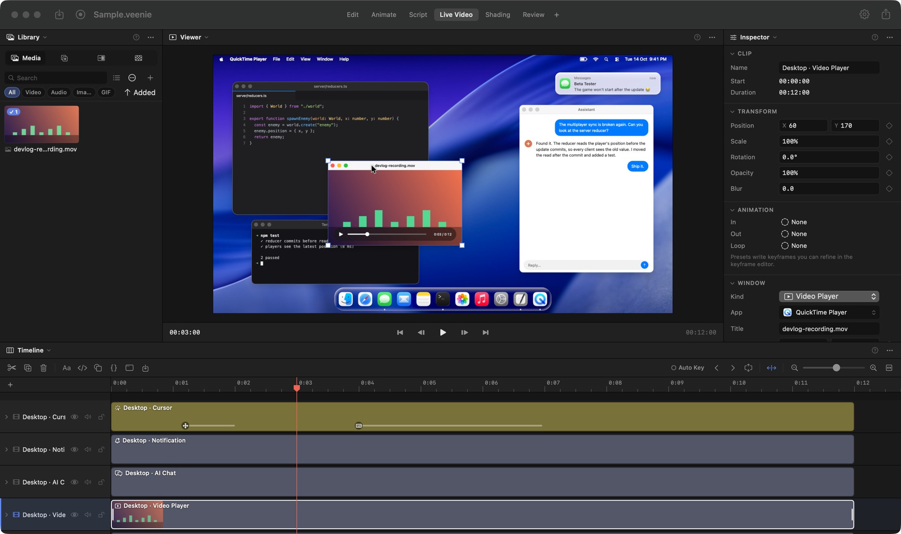
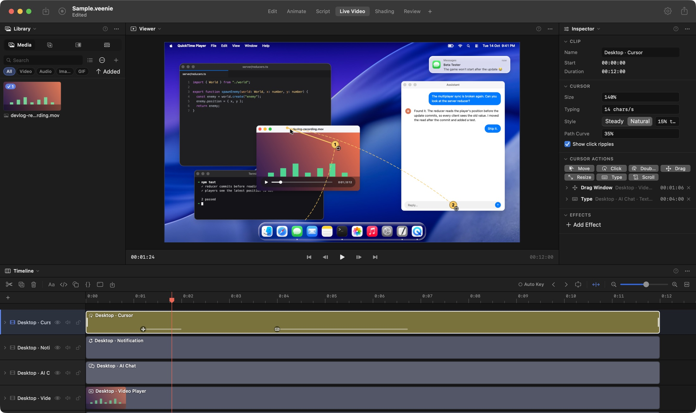
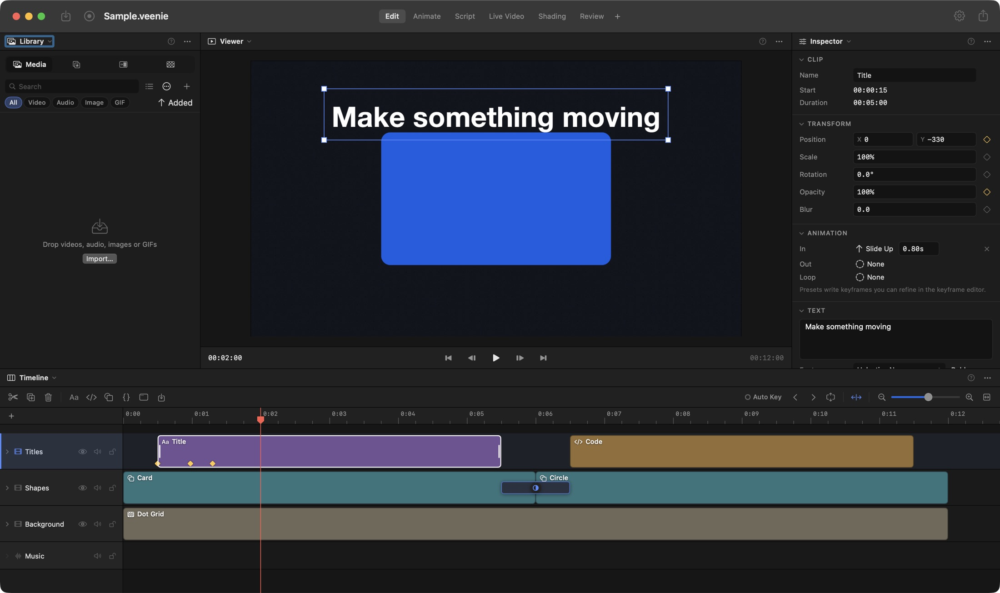
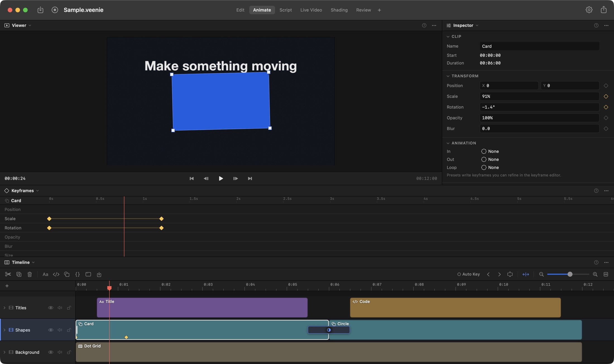
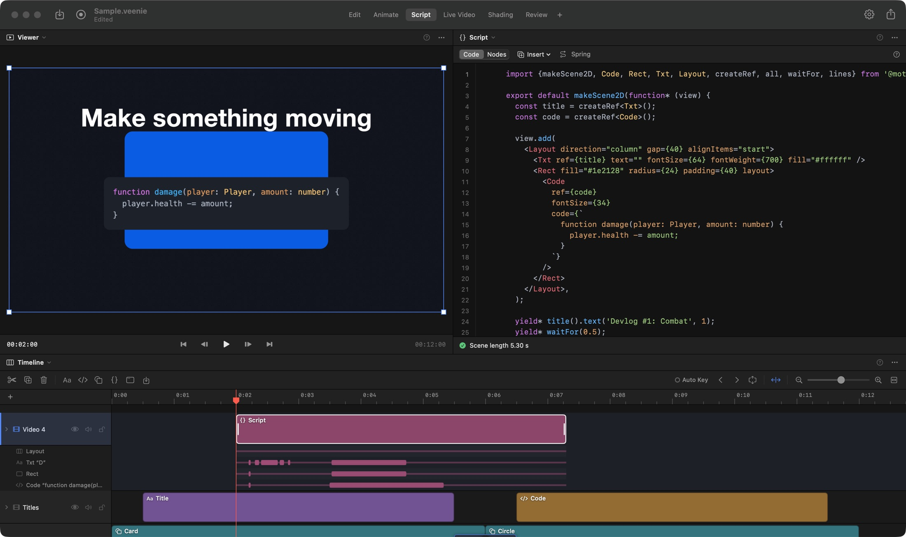
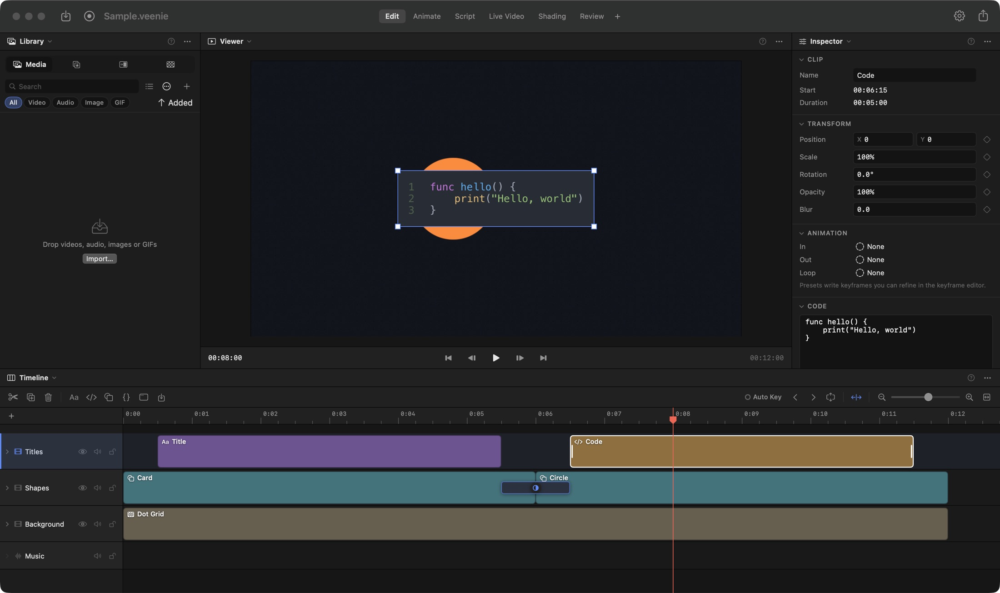
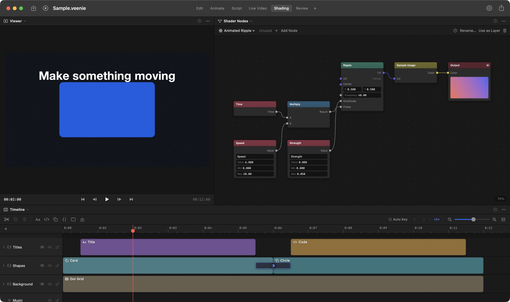
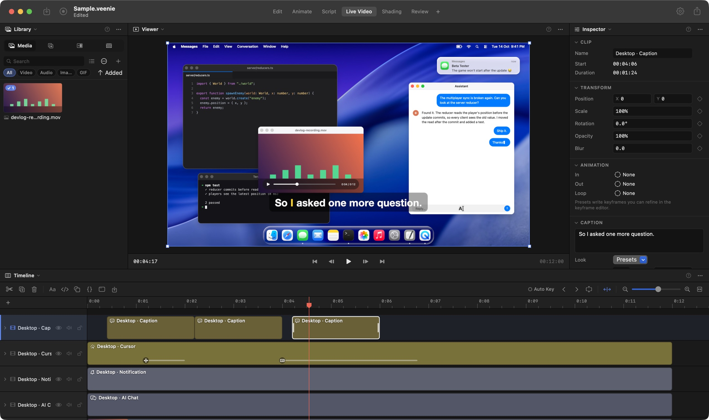

Native macOS editorSwiftmacOS 15+
Show your
work.
Veenie is a video editor for devlogs and motion graphics. Record your screen, stage it on a desktop you control, animate it with keyframes or code, and export exactly what you saw in the preview.

01 — Record
Record once. Fix it afterwards.
Press ⇧⌘R and capture a display or a window at native resolution.
The cursor goes on its own track, so Veenie can redraw it smoothly, generate zooms from your clicks, and let you change any of it after the take.
- Video
- HEVC or ProRes, native resolution
- Audio
- System audio, plus the mic on its own track
- Camera
- Optional, becomes a webcam bubble
- Cursor
- Tracked at 120 Hz, then redrawn with motion blur and click bounce
- After the take
- Backdrop, padding, corners, crop, callouts, zooms and speed regions
- Canvas
- 16:9, 9:16, 1:1 or 4:5, in one click
02 — Stage
A desktop that does what you tell it.
Live Video builds a simulated Mac: windows, a dock, and a menu bar with a running clock.
Plan the cursor as a list of actions: move, click, drag, type, scroll. Veenie works out the path and what each action does to the windows. Nothing is baked into keyframes.
Windows can be AI chats that stream their replies, terminals with output, browser tabs, video calls, or notifications that slide in.

03 — Edit
One renderer for preview and export.
Text, code, shapes, transforms and keyframes are drawn live by the compositor. Most edits redraw instantly, and what you see in the preview is what you get in the file.
The timeline has multiple tracks, snapping, split, trim, ripple delete, speed and volume, with filmstrips and waveforms on every clip.

04 — Animate
Keyframes, code, or nodes.
Click the diamond beside any property to add a keyframe, then shape the curve in the Keyframes editor.
For motion graphics, write TypeScript and JSX with a Motion Canvas–style API. Scenes are drawn at output resolution, so they stay sharp at any size. You can also switch a scene to Nodes and wire it up without code.
// spotlight lines 1–2, then fade in yield* code().selection(lines(1, 2), 0.6); yield* title().opacity(1, 0.4);




05 — Caption
Captions, transcribed on your Mac.
Veenie transcribes speech on your Mac into styled captions, with the spoken word highlighted as it plays.
Export them as SRT when you upload. Audio visuals like a waveform, bars, a spectrum or a pulse can follow the voice-over too.

06 — Specs
What's in the box.
Built in Swift on Apple's own media frameworks, so it uses your Mac's hardware for capture, playback and export.
- Requires
- macOS 15 or later
- Built with
- Swift 6, SwiftUI, AVFoundation, Core Image, ScreenCaptureKit
- Export
- H.264, HEVC and ProRes with explicit bitrate. Animated GIF. SRT captions.
- Workspaces
- Edit, Animate, Script, Live Video, Shading, Review. Split or add your own.
- Scripting
- TypeScript and JSX, signals, generator flow, flex layout, code morphing
- Templates
- Investigation Desktop, Group Video Call, Late-Night Chat
- Assistant
- Built-in sidebar using your own Anthropic API key
- Automation
- Local, authenticated MCP server with 46 tools for editing, rendering frames and exporting
- Shortcuts
- Space play · S split · ⌘E export · ⇧⌘R record · ⌘? help